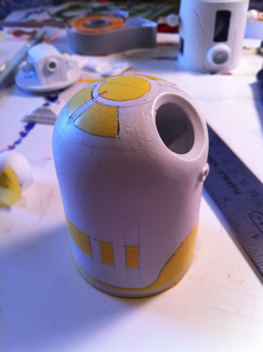

manlyartadventure:
R5-A3 Process 1 on Flickr. If you’re interested in this sort of thing, you can check some process pics of my R5-A3 custom HERE. Enjoy!
R5-A3 Process 1 on Flickr.
If you’re interested in this sort of thing, you can check some process pics of my R5-A3 custom HERE. Enjoy!
This is my friend Jason’s newest art project. Very cool.